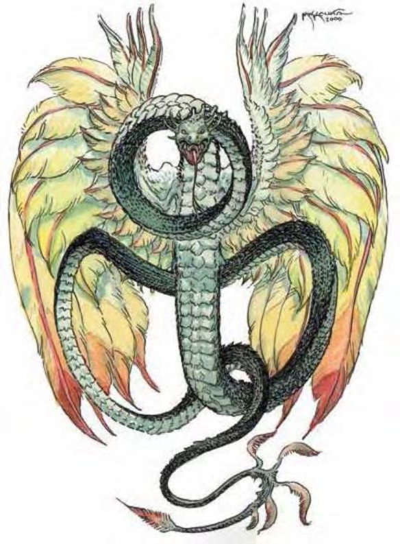

| 资料栏位 | 羽蛇 (Couatl) 大型异界生物（本地） |
|---|---|
| 生命骰 | 9d8+18 (58hp) |
| 先攻 | +7 |
| 速度 | 20英尺 (4格)，飞行60英尺 (良好) |
| 防御等级 | 21 (-1体型，+3敏捷，+9天生)，接触12，措手不及18 |
| 基本攻击/擒抱 | +9 / +17 |
| 攻击 | 啮咬+12近战 (1d3+6 外加毒素) |
| 全力攻击 | 啮咬+12近战 (1d3+6 外加毒素) |
| 占据/触及 | 10英尺 / 5英尺 |
| 特殊攻击 | 紧勒 2d8+6, 精通攫抓, 毒素, 心灵异能, 法术 |
| 特殊能力 | 改变外形, 黑暗视觉60尺, 幻化灵体, 心灵感应90英尺 |
| 豁免 | 强韧+8, 反射+9, 意志+10 |
| 属性 | 力量18, 敏捷16, 体质14, 智力17, 感知19, 魅力17 |
| 技能 | 专注+14, 交涉+17, 跳跃+0, 知识 (任意两项)+15, 聆听+16, 搜索+15, 察言观色+16, 法术辨识+15 (面对卷轴时+17), 侦察+16, 生存+4 (追踪时+6), 翻滚+15, 使用魔法装置+15 (使用卷轴时+17) |
| 专长 | 闪避, 法术强效, 施法免材B, 盘旋, 精通先攻 |
| 区域 | 温带森林 |
| 组织 | 单独, 成双或成群飞翔 (3-6) |
| 挑战等级 | 10 |
| 宝藏 | 标准 |
| 阵营 | 总是守序善良 |
| 进化 | 10-13HD (大型) ; 14-24HD (超大型) |
| 等级调整 | +7 |
这条长有虹彩羽翼的巨蛇显得自信且强大，并对周遭事物了如指掌。
羽蛇因其纯粹的美丽、广大的魔法力量与坚定不移的美德而闻名。它的智慧与善良使其常常在其栖居之地成为被崇敬的对象。羽蛇大约有12尺长，翼展约有15尺。重约1,800磅。羽蛇能说天界语，通用语和龙语，还拥有心灵感应能力（见下文）。
战斗羽蛇很少会在未受挑衅的时候主动发起攻击，尽管它总是会攻击那些受人当场抓获的恶人。羽蛇会对任何它怀疑的生物使用侦测思想能力。它们拥有很高的智力，在敌人接近之前先在远距离使用魔法。如果一个以上的羽蛇参与作战，战斗之前他们会商讨战略。
改变外形 (Change Shape, Su)：羽蛇可以变成任何小型或中型类人生物的外形。
紧勒 (Constrict, Ex)：羽蛇可以通过一次成功的擒抱检定造成2d8+6伤害。
精通攫抓 (Improved Grab, Ex)：使用此能力，羽蛇必须先用啮咬攻击命中不大于其体型两级以上的生物。然后可以用一个自由动作尝试擒抱对手，该动作不会引发借机攻击。如果成功通过擒抱检定，则对方被定身并造成紧勒效果。
毒素 (Poison, Ex)：伤口型，强韧DC16，初始伤害2d4力量，后续伤害4d4力量。此项豁免DC基于体质。
心灵异能 (Psionics, Sp)：随意施展――侦测混乱，侦测邪恶，侦测善良，侦测守序，侦测思想 (DC15)，隐形术，异界传送 (DC20)，变形术 (只对自己有效)。有效施法者等级9。此项豁免DC基于魅力。
法术 (Spells)：羽蛇可以如同9级术士一样施展法术。它可以从术士，牧师以及空气，善良，守序领域的法术列表中选择已知法术。牧师法术和领域法术对于羽蛇相当于奥术，这意味着羽蛇可以不依靠法器来施展它们。
典型已知法术 (6/7/7/7/4；豁免DC13+法术等级)：
0-治疗微伤，晕眩术，打击死灵，光亮术，隐雾术，冷冻射线，阅读魔法，提升抗力；
1-忍受环境，法师护甲，防护混乱，克敌机先，风墙术；
2-治疗中度伤，鹰之威仪，灼热射线，沉默术；
3-气化形体，反邪恶法阵，三级怪物召唤术；
4-魅惑怪物，行动自如。
幻化灵体 (Ethereal Jaunt, Ex)：此能力相当于幻化灵体法术 (施法者等级16)。
心灵感应 (Telepathy, Su)：羽蛇能与90英尺内任何拥有智力属性的生物进行心灵沟通。如果这一生物自愿，则其可以回应羽蛇――而不需要任何共同语言。